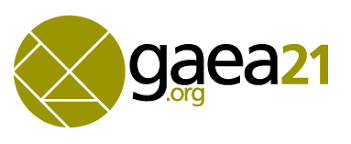
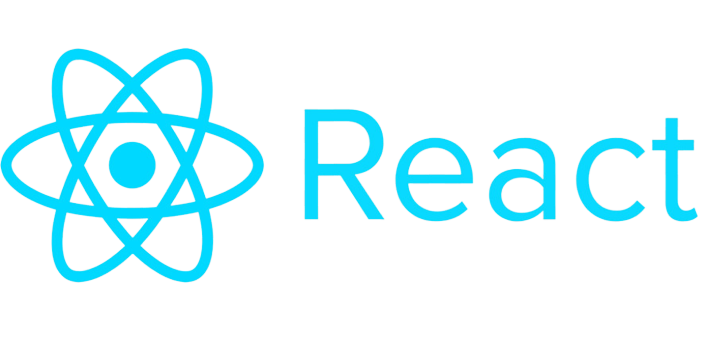

Le début ! Seif FEKAIER Mon aventure a débuté le jeudi 24 février 2022, ce jour fut l'entretien décisif pour ce stage chez gaea21. En effet j'ai passé plusieur formulaire de compétence pour avoir cet entretien, il fallait que je note mes compétences pour qu'ils puissent ensuite savoir si il faut me prendre ou pas. Puis arrive le jour du 24 février, ce jour fut stressant mais j'ai pu leurs montrer mes compétences en développement web. A 16h00 un appel se lança et j'ai pu faire connaissance de mon RH Marine Larose et mon coordinateur Alexandre Nguyen tout deux font preuve de professionnalisme. L'entretien commença par leurs présentations et ma présentation qui a durée une bonne dizaine de minute puis tout s'enchaîna avec de multiple questions sur mes capacités. 1h passa comme des secondes et tout se termina sur une réponse positive donc un oui je rejoins gaea21.  Des semaines passèrent et le 7 avril 2022 la date de ma rentrée dans l'association je reçu une invitation skype afin d'être acceuillit par Yvan Claude le fondateur de l'association puis après la séance d'acceuil tout s'enchaîna avec une séance IT c'est une sénace qui permettra de faire un point sur tout les projets ainsi que les parties formations et ce qu'il reste à faire bien sûr c'est pour que Yvan puisse voir l'avancer de chaque chose. A la fin de cette séance je devais rester avec le coordianteur afin d'avoir des explications sur le stage et comment se déroulera ce stage. Donc le stage se déroulera d'abord par des formations puis un exercice final et enfin par les projets de gaea21.  Après cet appel je devais attendre demain pour le début de ma formation. Le lendemain un appel se lança pour la formation j'ai discuté avec mon coordinateur et il me mit sur la formation react js et symfony qui pouvait durée 2 mois car je faisais mon stage en alterné avec mes cours. Donc j'ai commencé par la formation REACT JS ! Retour Menu Article suivant La Formation React JS